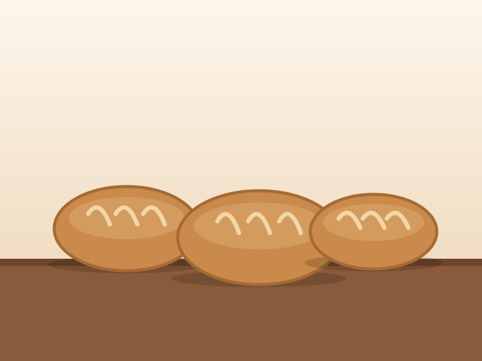
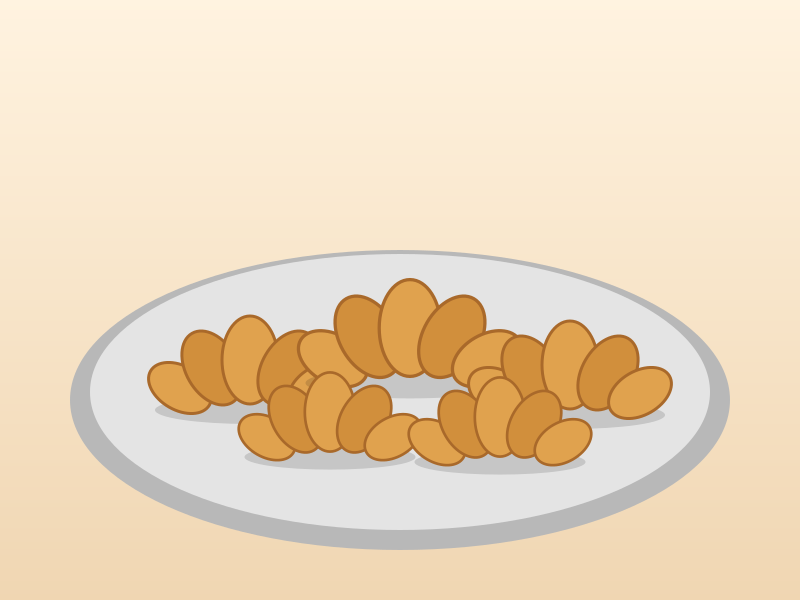
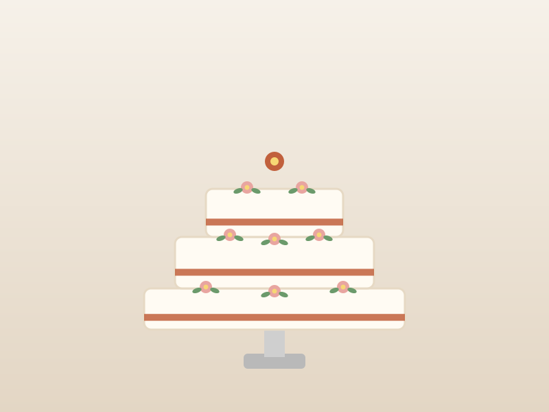
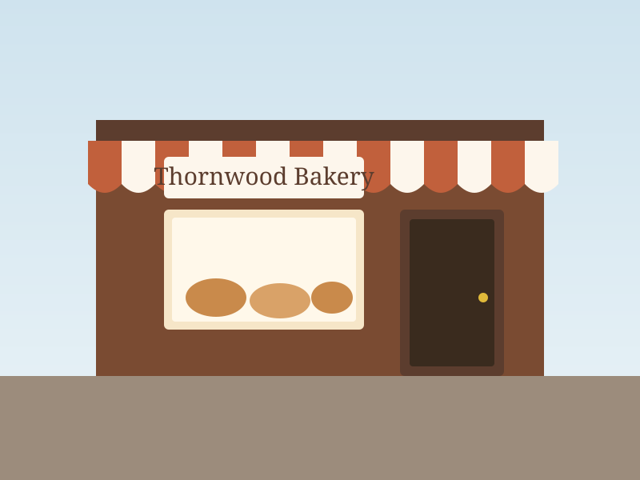
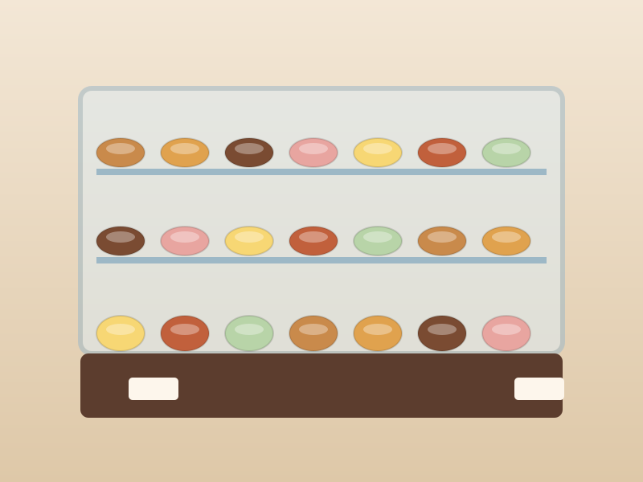

👩🍳
Sarah Thornwood
Founder & Head Baker
Sarah trained at a bakery school in Cape Town before returning to Johannesburg to open Thornwood. She leads all recipe development and custom cake design.
Thornwood Bakery began in 2015 as a small home-baking project in the kitchen of founder Sarah Thornwood. What started as weekend loaves shared with neighbours in Melville quickly grew into something far bigger than she had imagined. By 2017, demand had outgrown the home kitchen and Thornwood Bakery opened its first shopfront on 7th Street, Melville - a warm, welcoming space filled with the smell of freshly baked sourdough every morning.
Today, the bakery serves the local community six days a week, supplying artisan bread, pastries, and custom celebration cakes to a loyal base of regular customers. Everything is still made by hand, using traditional methods and locally sourced ingredients wherever possible.
Thornwood Bakery Shopfront
A look at what comes out of our Melville kitchen every morning. Select any picture to view it larger.





To bake honest, high-quality bread and pastries using traditional methods and locally sourced ingredients - delivered fresh to our community every day.
To become the neighbourhood's most trusted destination for handcrafted baked goods, while growing a loyal online customer base across Johannesburg.
A small, dedicated crew who arrive before sunrise every day to make sure your morning starts with something special.
Founder & Head Baker
Sarah trained at a bakery school in Cape Town before returning to Johannesburg to open Thornwood. She leads all recipe development and custom cake design.
Pastry Baker
Sipho specialises in laminated doughs - croissants, pain au chocolat, and danish pastries. He has been with Thornwood since 2018.
Cake Decorator
Lerato handles all custom celebration cakes, from consultation to the final decoration. Her designs have been featured across local social media.